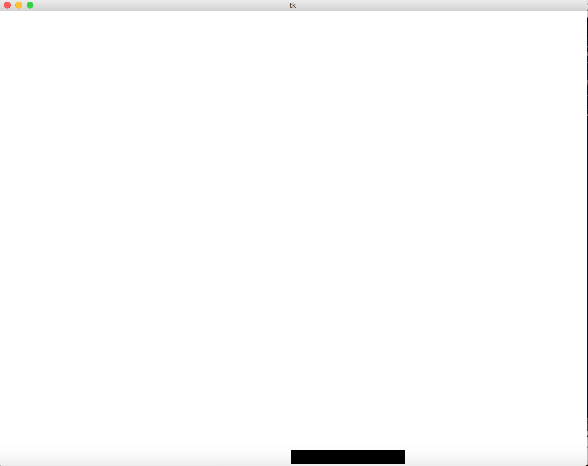
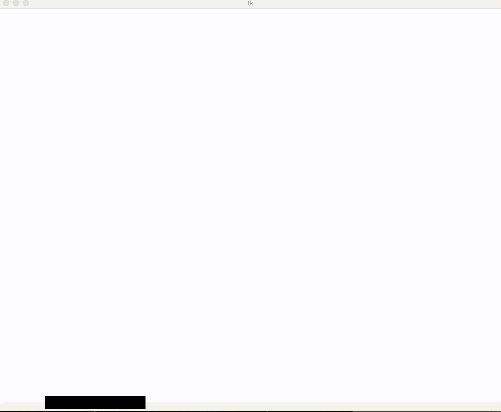

In this lesson, we will create a controllable rectangle called a Paddle, that will move from side to side, and is controllable using the arrow keys. This Paddle will function similar to the paddle in brick breaker.
We are going to be:
- Crating a canvas on our computer screen
- Creating a “Paddle” class to provide attributes and functionality to the Paddle.
- Using Canvas methods to create the Paddle’s shape
- Use key-binding to attach key press to the Paddle’s method
It’s Paddle Time
7-1 Bringing up the Canvas
Before we create our Paddle class, let’s make sure we can bring up the canvas, so that we can draw our Paddle on to it.
|
|
Running this program should bring up an empty canvas that is 1000 pixels wide and 800 pixels tall.
7-2 Creating the Paddle Class
Creating a class for our Paddle will give us control over its attriubutes (like its size and speed), and its methods (like its ability to move left and right). So lets start by creating an init function that creates an canvasm idm abd xSpeed attribute. The canvas attribute will tell the the Paddle which canvas to appear on (which will be the empty canvas we made). The id attribute will be the rectangle shape itself. And the xSpeed will be the speed of the paddle (…once we get it moving). This code should simply make the paddle appear on the screen.
Note: Pay attention to the coordinates that we give the create_rectangle() function. These coordinates puts the rectangle in the bottom, middle of the screen.
|
|

7-3 Moving the Paddle
To move the paddle, we need to do a few things. First we need to import time at the top of the file, so we can create an animation loop. Next, we must create a draw() method in the Paddle class, that draws moves the Paddle by xSpeed pixels. this draw() method will also check the far left and far right coordinates of the paddle, and if the far left coordinate is less than 0, we know the paddle has hit the left side of the canvas, so we must reverse the direction to make it bounce. If the far right coordinate of the paddle is greater than the canvis width, than we must also reverse the direction here.
Finally, we must create the animation loop which draws the paddle, updates the canvas, and sleeps the program for .01 seconds.
|
|

7-4 Controlling the Paddle
It’s cool that the Paddle is moving, but it would be a whole lot cooler if we could control the Paddle someway. Luckily, there is an easy way to do this; it’s called key-binding. Key binding simply assigns a function or method to a key on the keyboard. In this case, we will tell the left key to change the Paddle’s xSpeed attribute to -3, and the right key will change the Paddle’s xSpeed attribute to 3. We will accomplish this binding in the Paddle’s init method.
|
|